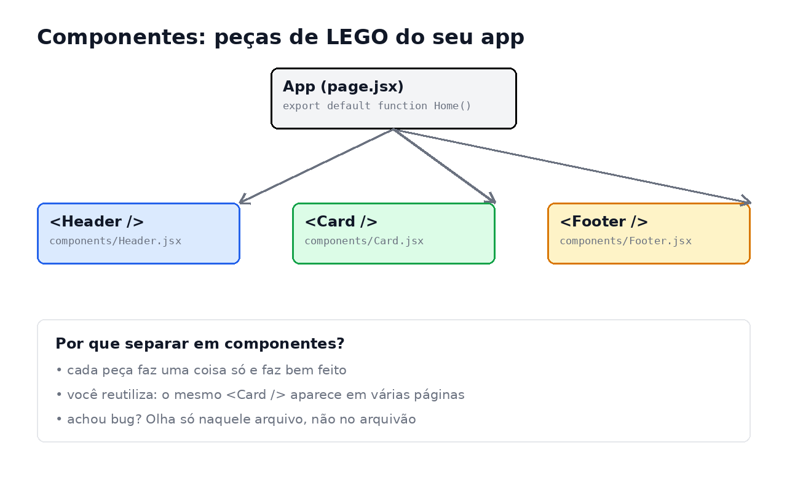

Componentes
O app/page.jsx da Ana já está com um monte de HTML dentro de uma função só. Hora de organizar: quebrar em componentes — pedacinhos de LEGO reutilizáveis, cada um num arquivo próprio. Nesta página você vai criar a pasta components/, escrever o primeiro componente e importar ele na página.
- O que é um componente: função que retorna JSX, um por arquivo
- Onde guardar: pasta
components/na raiz do projeto export default+import Nome from "../components/Nome"- Componente Server importando outro Server (padrão) e Server importando Client
- Regra: arquivo de componente começa com letra maiúscula
A ideia: LEGO — uma peça por vez, encaixando no fim
Imagine que a Ana está montando um castelo de LEGO. Ela não derrete um bloco gigante de plástico e pronto — ela pega peças menores (uma torre, uma porta, uma janela) e encaixa uma na outra até o castelo existir. Cada peça faz uma coisa só, tem um nome e pode ser reutilizada em outros castelos. Um componente React é exatamente uma peça de LEGO: uma função JavaScript que retorna um pedacinho de interface, com um nome (sempre com letra maiúscula, como Header), num arquivo próprio. A página monta o site encaixando essas peças: <Header />, <Card />, <Footer />.
A convenção do Next.js é simples: crie uma pasta components/ na raiz do projeto (fora de app/, para não virar rota!) e coloque cada componente lá dentro, um arquivo por peça: components/Header.jsx, components/Card.jsx. Para usar, importe com o caminho relativo ou com o alias @/ (se o create-next-app configurou): import Header from "@/components/Header" ou import Header from "../components/Header" de dentro de app/. Dentro do JSX, use como tag: <Header />.
Uma regra de ouro do App Router: um Server Component (padrão) pode importar outro Server Component sem problema nenhum — é só JavaScript. Ele também pode importar um Client Component (um com "use client") e passar props serializáveis — o Next cuida da mágica. O caminho inverso (Client importando Server) não funciona: se o componente filho é interativo, quem manda nele é o pai server.
Criando o primeiro componente da Ana
import Link from "next/link";
export default function Header() {
return (
<header>
<strong>MeuSite</strong>
<nav>
<Link href="/">Início</Link>
<Link href="/sobre">Sobre</Link>
</nav>
</header>
);
}
import Header from "../components/Header";
export default function Home() {
return (
<>
<Header />
<main>
<h1>Olá, Next.js! 👋</h1>
<p>Agora com componentes separados.</p>
</main>
</>
);
}

<Header />, <Card />, <Footer /> — cada um no seu arquivo.| Regra | Exemplo |
|---|---|
| Um componente por arquivo, nome = nome do arquivo com maiúscula | components/Header.jsx → Header |
| Export padrão | export default function Header() { ... } |
| Import no outro arquivo | import Header from "../components/Header"; (ou "@/components/Header") |
| Uso no JSX (tag com maiúscula) | <Header /> |
| Componente fora de app/ para não virar rota | components/ na raiz — app/Header.jsx viraria rota! |
| Client Component dentro de Server | Server importa Client: ✅ permitido (props serializáveis) |
Missão: no código abaixo, crie um componente chamado Header que retorna um <h1>Meu Site</h1> e use <Header /> dentro do App. Aperte ▶ Rodar.
export default function App() {
return (
<main>
<p>sem header ainda</p>
</main>
);
}function Header() {
return <h1>Meu Site</h1>;
}
export default function App() {
return (
<main>
<Header />
<p>com header!</p>
</main>
);
}Quando dá errado
app/ e ele virou rota ou deu conflito:⚠ Conflicting app and page file / a rota /Header passou a existir Dica do guia: componentes reutilizáveis vão em components/ na RAIZ, fora de app/. Dentro de app/ só page.jsx, layout.jsx e arquivos de rota.
Error: Attempted import error: 'Header' is not exported from
'components/Header.jsx' (imported as 'Header').
Dica do guia: o componente precisa de `export default function Header()`.
Se usar export nomeado, a import muda para `import { Header } from ...`.
<header /> é tratado como tag HTML nativa (minúscula = elemento do navegador). Para componente React, SEMPRE maiúscula: <Header />.
Exercícios
1. Onde a Ana deve guardar componentes reutilizáveis (que não são rotas)?
2. Como se usa o componente Header (importado) dentro do JSX?
Exercício 1
Escreva a primeira linha de um componente chamado Header exportado como padrão: